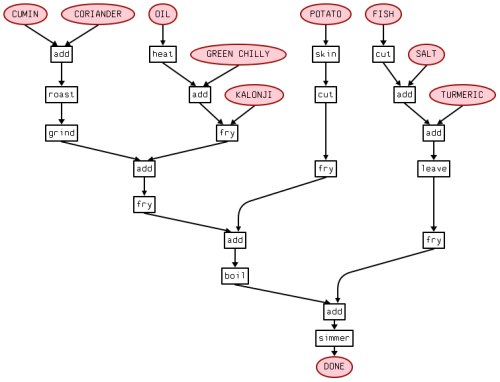

Cooking ? DAG that!
Cooking is, at a fundamental level, like doing a chemistry or physics experiment. This is contention is likely to raise the eyebrows of our traditional khansama or modern sous chef , but let me explain. The aim of cooking is to start with certain raw materials, combine them in the right proportion, add energy to the combination in the form of heat, and coax them into reacting in just the way that finally produces a delightful sensation to the palate and nourishment for the body. What is different, really, and what makes cooking more of an art than a science, is that we are still at a stage where the details of the reactions that take place between the ingredients is not well understood. Compared with a well-studied reaction in organic chemisty, where we understand the mechanism almost down to the last electron transfer, we are still in the stone age when it comes to culinary reactions. The nascent field of molecular gastronomy, however, is trying to move cooking from an empirical art to a rational science. The late Nicholas Kurti, an Oxford professor of physics and pioneer in this field, had his own television show called the Physicist in the Kitchen. Kurti is supposed to have made the challenging remark
"I think it is a sad reflection on our civilization that while we can and do measure the temperature in the atmosphere of Venus we do not know what goes on inside our soufflés.“
Inspired by this infusion of the scientific method into cooking, why not change the traditional format of a recipie from copious paragraphs to a flow chart ? Here is my attempt at presenting a fish curry recipe in terms of a flow chart. Enjoy!
